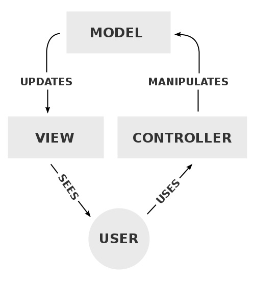
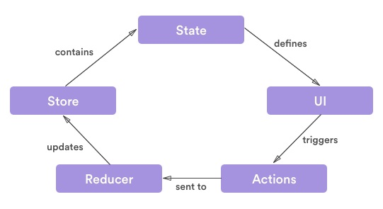
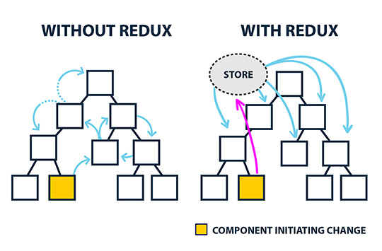

React
Conceitos básicos e exemplos
Thiago Zanivan / @thiagozf
Minha experiência com React
- Aproximadamente dois anos trabalhando diariamente com React em diferentes projetos
- Contribuições em projetos da comunidade, como o styled-components e react-router
O que é?
React é uma biblioteca JS com um único propósito:
criação de interfaces de usuário
Primeira impressão
import React, { Component } from 'react';
class GosteiButton extends Component {
render() {
const { gostei, onClick } = this.props;
const texto = gostei ? 'gostei' : 'não gostei';
return (
<div onClick={() => onClick(!gostei)}>
Eu {text} de React. Clique para mudar!
</div>
);
}
}
Conceitos importantes
- Componentes
- Fluxo de dados unidirecional (Flux)
- Controle de estado
- HTML dentro do JavaScript!
Componentes
O conceito mais importante para entender React...
... porque tudo em React é um componente!
Escrever um componente é como escrever um grupo de tags HTML
import React, { Component } from 'react';
/**
* Utilizar <HelloMessage text='Hello World' /> resultará no seguinte HTML:
* <div>Hello World</div>
*/
class HelloMessage extends Component {
render() {
return (<div>{ this.props.text }</div>);
}
}
Apesar de simples, o conceito de componentes é extremamente poderoso!
1. Podem ser agrupados/combinados para criar componentes maiores
import React, { Component } from 'react';
import HelloMessage from 'components/HelloMessage';
/**
* Utilizar <HelloWorld /> resultará no seguinte HTML:
* <div>Hello World</div>
*/
class HelloWorld extends Component {
render() {
return (<HelloMessage text="Hello World" />);
}
}
2. Os efeitos de uma ação são previsíveis
- Nada de controllers
- Nada de directives
- Nada de templates
- Nada de listeners
- Apenas "dumb" components!
3. Possuem um ciclo de vida simples e bem definido

Alguns eventos do ciclo de vida de um componente React
import React, { Component } from 'react';
class MyComponentLyfecicle extends Component {
componentWillMount() {
console.log('componentWillMount()');
}
componentWillReceiveProps(nextProps) {
console.log('componentWillReceiveProps(nextProps)', nextProps);
}
render() {
console.log('render()');
return (<div>React's Lifecycle</div>);;
}
}
4. Não se importam com dados, mas em como apresentá-los
Como fazer todo "o resto" em aplicações React?
Utilizando diversas outras bibliotecas que trabalham muito bem em conjunto com o React!
Aplicação
- React: biblioteca de UI
- Redux (ou Flux): gerenciamento de estado
- Redux Saga: comunicação assíncrona (backend)
- Normalizr: normalização de estruturas
- Reselect: transmitir dados para os componentes
- Immutable.js: provê estruturas imutáveis em JS
Testes
- Jest: escrita e execução de testes unitários
- Enzyme: utilitários para testes de componentes React
Tooling
- Webpack: module bundler
- npm: controle de dependências e scripts
- flow: verificação de tipos em JS
Arquitetura de uma aplicação React
MVC
MVVM

MVC que desandou...

Você pode prever o que acontece com a aplicação ao modificar um único modelo?
Redux
Fluxo unidirecional
State
- Objeto que representa a situação atual da aplicação (dados)
- Resultado de todos os eventos ocorridos desde a inicialização (event sourcing)
State
- Fonte única de verdade da aplicação: todo o estado é armazenado numa árvore de objetos dentro de uma mesma store
- Imutável: a única forma de modificar o estado é emitindo uma action, ou seja, um objeto que descreva o que aconteceu
- Atualizações por funções puras: para especificar como o estado é transformado pelas ações, deve-se escrever reducers
UI
Implementada por meio da composição de componentes React
import React, { Component } from 'react';
class App extends Component {
render() {
return (
<Header/>
<Content/>
<Footer/>
)
}
}
UI
- É definida pelo state da aplicação
- Interações do usuário são descritas por action
class ListItem extends Component {
static defaultProps = { checked: false, text: '', onClick: () => {} };
render() {
// "checked" e "text" estão conectados ao state
// "onClick" irá fazer o dispatch de uma action
const { checked, text, onClick } = this.props;
return <li onClick={() => onClick(!checked)} checked={checked}>{text}</li>;
}
}
Actions
Objetos que representam comandos ou eventos ocorridos na aplicação
export const loadTodos = () => ({ type: LOAD_TODOS });
export const todosLoaded = (todos) => ({ type: LOAD_TODOS_SUCCESS, todos});
export const todosLoadingError = (error: string) => ({ type: LOAD_TODOS_ERROR, error });
Reducers
Funções puras que processam as ações e atualizam o estado da aplicação
function appReducer(state = initialState, action) {
switch (action.type) {
case LOAD_TODOS:
return state
.set('loading', true)
.setIn(['data', 'todos'], false);
case LOAD_TODOS_SUCCESS:
return state
.setIn(['data', 'todos'], action.todos)
.set('loading', false);
default:
return state;
}
}
Testes
Testes em aplicações React são extremamente simples e diretos
Testando Reducers
- Reducers são funções puras!
- Deve-se fazer uma chamada passando o state atual, uma action e verificar o state é igual ao esperado após a execução da action avaliando o retorno da função
Testando Actions
- Basta utilizá-las ao testar os reducers!
Testando UI
- Fornecer propriedades para o componente e verificar se o mesmo renderiza corretamente (ex.: algo é escondido/mostrado dependendo de uma propriedade)
- Verificar chamadas de funções, passadas por propriedades, ao executar uma ação
- O Enzyme auxilia nesta tarefa